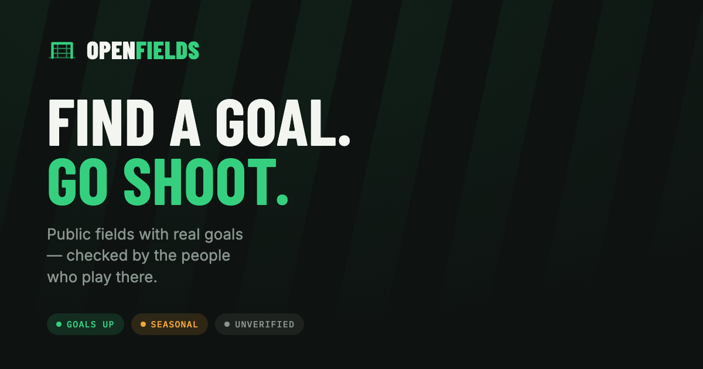
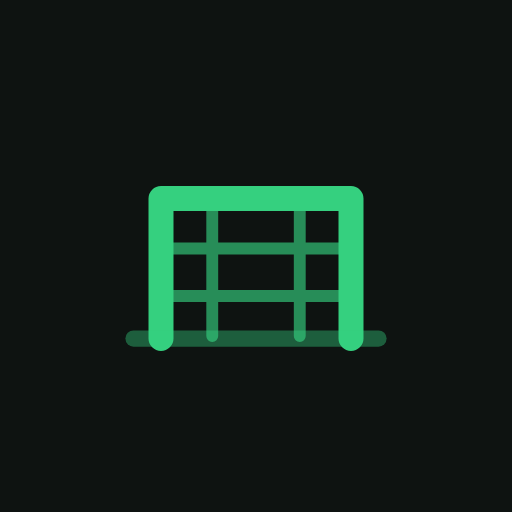

Identity
The mark
A goal seen head on: crossbar and posts, open at the bottom, netting inside, ground line beneath. One shape does the logo, the map pin, the favicon, the app icon and the photo watermark.
Scale
It has to survive 17px
Below about 20px the four mesh lines fill in and read as a solid block, so small sizes use a reduced variant with two verticals, one horizontal and no ground line. That is the version in the map pins and the favicon.
Lockups
Horizontal and stacked
Clear space on all sides equals the height of the crossbar. The wordmark is Barlow Condensed 800, uppercase, with "OPEN" in chalk, "FIELDS" in turf green.
Variants
Dark, light, single colour
On night turf, the default
On light, with darker green for contrast
Single colour for print and embroidery
Assets
What's in the repo

brand/og-image.png, 1200 by 630, for iMessage, Slack and X previews

App icon / PWA home screen, 512×512
Favicon, plus brand/mark.svg for the bare glyph